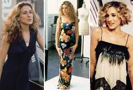

Welcome to Jennifers Site
JENNIFER URBAN
Jennifer Urban was born and raised in New York city she's a 20 year old creative, this website was created as a virtial Fashion room to access all the latest trends. Enjoy!
I'll start by listing my favorite stores to shop in
I love Barney's New York
I recommend Saks Off if you need good deals
I love Century 21 has amazing offers!
HERE ARE SOME OF MY FAVORITE STYLES AND HOW TO WEAR!! SARAH JESSICA PARKER IN DOLCE
